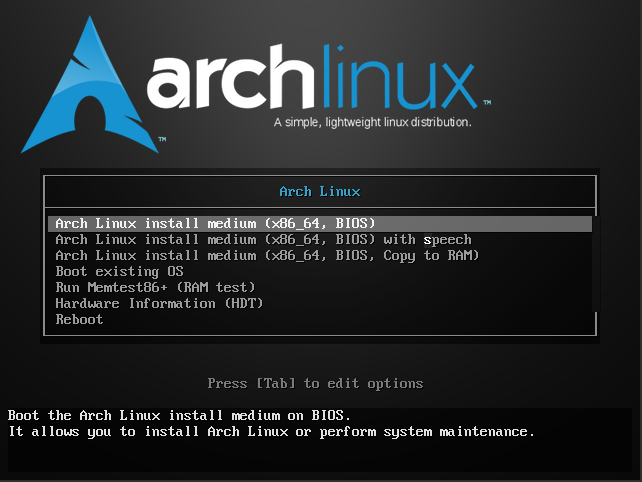
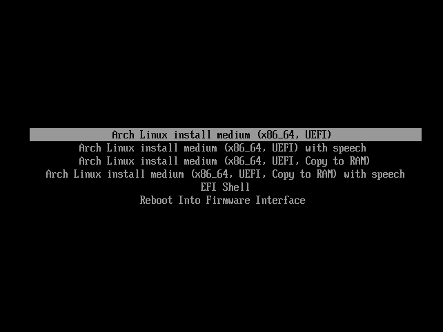
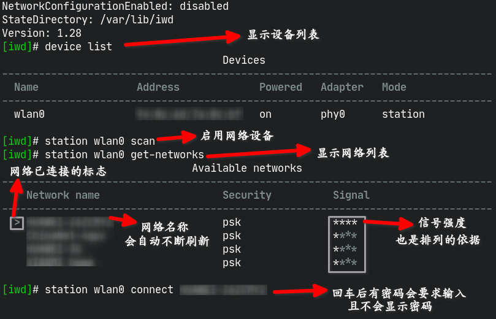

ArchLinux安装笔记
Table of Contents
1. 前言
本blog用于记录我安装ArchLinux的方法，更专业的教程请查阅 官方Wiki (虽然大部分内容都是参考的wiki)
2. 准备U盘启动盘
- 从 官网上下载ArchLinux的安装镜像
- 拷录安装镜像到U盘或者其他安装介质
- windows下则使用任意一款U盘拷录软件（自行百度）拷录镜像文件到U盘（注意，被拷录的U盘的所有数据都会丢失，请备份好资料后再执行操作）。
- 而Linux下则可以（使用root权限）使用下面的命令拷录镜像文件到U盘上(U盘不能挂载到系统上)
# dd if=你的镜像文件名称 of=/dev/sdX bs=512 #sdX为要拷录的U盘设备，实际中应为sda或sdb如果确认不了你的U盘是哪个，可以执行下面的命令查看你的磁盘状况
# fdisk -l一般通过大小和分区情况应该能分出来
（Linux的磁盘管理机制请自行百度）
- 除非你能够同时查看教程(例如说有还有台手机之类的在旁边)则进行下一步，否则建议先记下下面的安装过程较好（没记住到时候装一半删了旧系统然后碰到问题不知道怎么解决就等着喜提砖机一块了）
- 重启电脑，更改启动顺序或（一般情况下）按下F12选择启动项，进入Arch的安装镜像系统。倘若屏幕上出现 FALT 报错请自行搜索解决(我忘了有什么情况会报错了)
3. 第一安装阶段
此阶段的操作在archlinux镜像系统中进行
3.1. 确认引导类型
执行以下命令：
# ls /sys/firmware/efi/efivars
倘若屏幕提示 No such file or directory 则你的电脑是BIOS引导，反则是EFI引导
个人办法：其实如果在开机时留意一下弹出过的菜单界面就能知道你的是什么引导方式。
BIOS引导的长这样： 而EFI的长这样：   引导器: syslinux 引导器: systemd-boot 关于具体的引导器区别，建议自行维基了解
3.2. 联网
有线网络的联网教程请自行百度，这里主要讲无线网络的连接。
无线网络联网，你可以使用 wifi-menu 工具联网，而我个人更倾向于使用 iwd 工具进行联网。在终端输入
# iwctl
打开iwd的设置界面,一下为一些常用命令列表：
| 命令 | 作用 |
|---|---|
| device list | 列出可用的网络设备 |
| station 设备名称 scan | 启用指定的设备 |
| station 设备名称 get-networks | 获取网络列表 |
| station 设备名称 connet 网络名称 | 连接指定的网络，有密码的会要求输入密码，连接成功后网络列表前会出现 > 号 |
| exit | 退出 |
| quit | 退出 |
| Tab制表键 | 补全或者显示出可用的命令 |
| 方向上下键 | 查找上一条/下一条历史命令 |
操作演示图片：

Figure 1: 操作演示
最后使用
# ping www.baidu.com
判断能否正常上网（使用Ctrl-C退出）
3.3. pacman设置
pacman是archlinux的包管理器，暂不介绍用法，跟着做就行了
3.3.1. 手动设置软件源
pacman的默认mirror源非常好，列出了我们会用到的镜像源，加上sed，我们可以执行下面的命令开启清华镜像源:
cp /etc/pacman.d/mirrorlist /etc/pacman.d/mirrorlist.pacnew sed -ni "/tuna/p" /etc/pacman.d/mirrorlist
如果希望用阿里云则可将命令里的 tuna 替换为 aliyun 再执行
如果懂得用vim，自己编辑mirrorlist去，搜索China，自己选
本以为官方的iso是pacman默认文件那样没有开启任何源的，结果下载下来启动一看全是开的【捂脸】。好在改了个sed命令就解决了。
3.3.2. 自动设置软件源
直接运行以下命令依照速度进行自动排序，不用手动排序
reflector -c China -a 10 --sort rate --save /etc/pacman.d/mirrorlist
但存在问题是它可能会给你推荐一个野鸡服务器，有点让人难以接受，所以还是手动更新的好
3.3.3. 多文件同时下载
目前pacman的默认配置是开启多线程下载的，这一步可以跳过
编辑 /etc/pacman.conf 找到 #ParallelDownloads = 5 项，把前面的 # 号移除可以实现同时下载多个文件，后面的5是最大的同时下载数量
3.3.4. 增加archlinuxcn源
在 /etc/pacman.conf 文件末尾加入
[archlinuxcn] Server = https://mirrors.tuna.tsinghua.edu.cn/archlinuxcn/$arch
可以启用 archlinuxcn 源，里面有一些官方仓库没有的常用软件
3.4. 更新系统时间
执行下面的命令（正常情况下是没有输出的）
timedatectl set-ntp true
3.5. 为系统分区
注意！这个步骤要格外小心，命令回车前要确认命令无误，且要知道自己在做什么，重要的硬盘数据应提前备份好，避免带来数据的丢失
执行命令
fdisk -l
查看目前的分区情况
3.5.1. 分区建议
硬盘分区有分区表的区别，这影响到启动引导和分区。如果你的分区表为dos，则只能有四个主分区，想要分更多需要建立一个拓展分区占用一个主分区的名额，然后在拓展分区内划分逻辑分区（详见fdisk部分），gpt分区表则没有影响。另外，使用dos分区表一般对应使用的是BIOS引导，而gpt对应的是efi引导，对启动分区的需求有不同。
- 根分区：
两种分区表对根目录的要求都是一致的，都是要求类型为Linux,文件系统得是ext4、 btrfs等支持linux权限系统的的文件系统（别想着把根分区格式化成vfat或是ntfs） - 家目录分区（可选）：
一般而言如果有可能频繁重装系统那么建立一个独立的家目录(/home)分区是一个不错的选择，能够减少重装系统时重新配置的痛苦，但也会限制空间利用，导致跟分区和家目录不能共用闲置空间。 - 交换分区（可选）：
目前已经有交换文件这种更加灵活方便的形式存在，没有必要再单独划分出一个交换分区了。如果需要，要在分区时指定文件系统类型。 - BOOT分区：
是MBR+BIOS所需要的分区，需要在分区时为其加上可启动标志（新电脑比较少见用BIOS的了），大小200M左右，文件系统同根目录一样，挂载点在/boot(相对跟分区的挂载点而言) - EFI分区：是GPT+UEFI所需要的分区，要求文件系统为vfat，建议挂载点在/boot/efi目录（如果最终分区表没有设置会自动挂载到/efi目录）
3.5.2. 使用cfdisk进行分区
cfdisk有着伪图形界面，对萌新更友好，故放到前面来。不过它好像还有一点限制，没有 fdisk那么灵活，fdisk的教程见下一节
刚进入cfdisk时如果硬盘没有分区表会询问你。上下方向键移动，回车选择。BIOS选择dos， EFI选择gpt就好。具体的操作就不细讲了。
3.5.3. 使用fdisk进行分区
使用命令开始为硬盘分区
# fdisk /dev/sdX #sdX为目标硬盘，实际中应为sda或sdb...
关于fdisk的部分命令列表:
- m 查看帮助
- g 新建GTP分区表(会清空整个硬盘删除所有分区)
- o 新建MBR分区表(会清空整个硬盘删除所有分区)
- p 打印分区表（若p命令后中Disklable type:后为dos则为MBR分区表，gpt则为gpt分区表）
- n 新建分区
- MBR分区表
- 1.确认分区类型
- p 主分区（最多四个，编号1~4）
- e 扩展分区（占用主分区数量，最多一个，有了则不显示，编号同主分区）
- l 逻辑分区（不限量，前提是得有一个扩展分区，无则不显示，最大大小为扩展分区大小，即包容在扩展分区内，编号5~?）
- 1.确认分区类型
- GPT分区表
- 1.无需确认分区类型，无分区类型之分
- 共同步骤
- 2.确认分区编号
- 3.分区起始扇区（一般不管）
- 4.分区结束扇区（+单位 表示多大， -单位 表示剩余多大空间）
- MBR分区表
- d 移除分区，输入编号即可
- t 更改指定分区的分区类型（作用）
- w 保存退出
- q 不保存直接退出
3.5.4. 设置文件系统(mkfs)
使用下列命令格式化分区，一般除了efi的efi分区要用vfat外，基本上都是用ext4
mkfs.<FS> /dev/sdXn # <FS> 为对应的文件系统类型（ext3,ext4,vfat...），sdXn为硬盘上的第n个分区，n为分区编号
3.5.5. 挂载分区
使用mount,格式：
# mount /dev/sdXn /dir
关于挂载分区的具体内容请查看 ArchWiki官方教程
sdXn为硬盘分区，/dir 为挂载目标目录，详见下表，
但是在挂载硬盘时时不能直接按照下表挂载，/根目录一般挂载在USB系统的 /mnt 目录下，其他的磁盘挂载点跟着变化就行了，但一定要先挂载根目录再依文件夹的关系一个个挂载，没有的文件夹使用 mkdir -p 创建就好（例如：/boot/efi -> /mnt/boot/efi)
3.6. 安装基本系统
在硬盘全部挂载后，我们就可以开始安装系统了
安装基本系统：
# pacstrap -i /mnt/ base base-devel linux linux-firmware
命令中的 mnt 要替换成你所挂载根目录分区的目录名，忘记了可以使用
df -h或者lsblk查看
你还可以在安装完基本系统后安装额外的软件方便使用，使用
# passtrap -i /mnt/ 软件包名安装软件包。建议装上 dhcpcd （DNS服务） iwd （联网） vim （文件编辑） fish （一种shell，默认就有强大的自动补全配置）
倘若在前面的软件包设置里启用了archlinuxcn源，其实你可以额外安装内核软件包 linux-lily 在tty界面它原装支持显示中文
配置分区表：
genfstab -U /mnt/ >> /mnt/etc/fstab
这里的 mnt 同理。-U 为使用UUID标识的意思
进入新安装的系统：
arch-chroot /mnt/ /bin/bash
若前面你安装了 fish 就可以使用以下命令进入新的系统
# arch-chroot /mnt/ /bin/fish
4. 第二安装阶段
本阶段为进入chroot后的操作
4.1. 本地化
官方wiki建议小白不要在这时候设置中文（因为会导致字体无法显示），建议在装好图形环境后再设置。
如果设置了中文导致乱码，可以尝试使用
export LANG=en_US.UTF-8临时补救
设置中文:
vim /etc/locale.gen
输入 / 搜索zh_CN.UTF-8与en_US.UTF-8,分别去除前面的 # 号，并将其放到文件头部。如下：
zh_CN.UTF-8 UTF-8 zh_CN.GBK GBK en_US.UTF-8 UTF-8 # ......
并执行
# locale-gen
以及
# echo "LANG=zh_CN.UTF-8" >> /etc/locale.conf # export LANG=zh_CN.UTF-8
设置时区为上海，这里有两种办法：
- 手动设置
# ln -sf /usr/share/zoneinfo/Asia/Shanghai /etc/localtime - 工具设置
# timedatectl set-timezone Asia/Shanghai
设置硬件时钟：
# hwclock --systohc --utc
4.2. 安装GRUB引导
(如果需要使用systemd-boot等其他的启动引导器，请自行wiki)
安装grub软件包：
# pacman -S grub efibootmgr os-prober
os-prober 可以用于自动识别电脑上的其他硬盘装的其他系统
安装grub引导：
4.2.1. BIOS引导模式下
将grub引导安装在硬盘sdX的第n个分区
grub-install /dev/sdXn
/dev/sdXn为硬盘上的第n个分区，也是你的BOOT分区（挂载到 boot ）
4.2.2. EFI引导模式下
grub-install
4.2.3. 生成菜单、配置文件
（生成/更新）配置:
# grub-mkconfig -o /boot/grub/grub.cfg
如果需要启动时显示那一长串的日志，可以找到
GRUB_CMDLINE_LINUX_DEFAULT将后面的 quiet去除。如果使用多系统，可以编辑
/etc/default/grub，找到GRUB_DISABLE_OS_PROBER并将后面的"true"改为"false"并重新执行更新配命令
4.3. 用户设置
为root用户设置密码（否则无法登录）：
paswwd root
root 可以省略，前提是你在用root用户操作
创建用户：
# useradd -m USERNAME -s /bin/SHELL
USERNAME 为你的用户名,SHELL为你想用的shell名称，默认为bash，可以省略
添加组/启用sudo：
# usermod USERNAME -aG sudo
将用户添加进 sudo 组
为新用户创建密码（否则无法登录）：
# passwd USERNAME
4.4. 重启前最后的配置
启用dhcpcd服务（未安装的使用 pacman -S dhcpcd 安装）：
# systemctl enable dhcpcd
同理，可以启用iwd服务，启用后普通用户也可以使用iwctl了（未开启时必须使用root）
sudo启用sudo组内用户的支持：
# vim /etc/sudoers
找到 #%sudo ALL=(ALL:ALL) ALL ，移除 # 号取消注释（按下 i 进入插入模式再按下 Esc 退回普通模式。或者直接在行首按下 dw ）， :w! 强制保存后退出
由于sudoers一般是个只读文件，如果要使用sed大法还得改权限
退出后重启进入安装好的系统：
exit
reboot
5. 第三安装阶段(配置)
重新进入系统的操作，如果未提到请参见博客的其他文章
5.1. 使用图形界面
图形界面有两大阵营，一套是过去使用的X11，虽然已经过时但基本盘还在，许多软件仍旧使用X图形界面。而另一套是新兴的wayland，由于后发生态仍在完善中，需要使用xwayland 在wayland使用X的窗口作为过渡，基本可用了，部分主流的DE适配甚至默认就是wayland。
5.1.1. 安装一个桌面环境或者窗口管理器
- 桌面环境(DE) 桌面环境一般提供了配套的桌面环境，适合开箱即用，不用太过折腾，问题较少。且一般 DE的包是包含各种依赖的，不用麻烦找依赖问题
- gnome(wayland/x11)
pacman -S alacarte gnome networkmanager systemctl enable gdm # gdm为gnome的图形界面登录系统
- xfce(x11)
pacman -S xfce4 # 可以通过运行下一行命令启动 # startx /usr/bin/startxfce4
- kde(wayland/x11)
pacman -S plassma-meta kde-utilities-meta kde-system-meta sddm # 更完整的生态可以安装 kde-applications-meta 包 # pacman -S konsole dolphin kdeconnet ark # 启用sddm(或者每次登陆都手动使用执行命令启动): systemctl enable sddm
kde目前(2025.08.01)已经是默认使用wayland会话而不使用x11了
- gnome(wayland/x11)
- 窗口管理器(WM) 一般只提供窗口管理功能，轻量，需要自选配套的应用程序套件，会存在生态、主题设置等问题。
- i3-wm(x11)
pacman -S i3 i3blocks i3lock i3status # i3-wm只是一个窗口管理器而已，并非桌面系统，需要安装其他软件。 # 我个人习惯安装kde的软件并在i3wm下使用。即 pacman -S i3 i3blocks i3lock i3status sddm kdeconnet konsole dolphin\ ark qt5ct picom polybar feh rofi # qt5ct用于设置在i3-wm下kde程序的主题,配置（同上*pam_environment*已失效）： echo "QT_QPA_PLATFORMTHEME DEFAULT=qt5ct" >> /etc/environment # # picom用于美化窗口界面。polybar用于替代i3status。feh用于使用壁纸。rofi用于启动应用 # 2023-01-17更新：i3-gaps已经被并入了i3软件包了
- dwm(x11)
好用，虽然不是新手该碰的东西(所以也不讲) - hyprland(wayland)
由于需要的配置工作较大，请参见其他博客文章
- i3-wm(x11)
5.1.2. 安装登录管理器
gnome官方搭配gdm，kde可使用sddm。这边建议使用sddm。
# 下面的命令需要使用root权限 # 安装软件包 pacman -S sddm # 启用开机自启动服务 systemctl enable sddm # 立即启动sddm服务 systemctl start sddm # 若熟悉systemctl命令的可以自行摸索
如果不想用登录管理器，想要用tty登录的“原始”方式，可参考使用下列方法：
- 使用X图形界面：
安装xorg-xinit软件包:pacman -S xorg-xinit
在终端执行下列命令启动图形界面：
startx /usr/bin/startplasma-x11上面的命令中startx后面跟的是DE的启动可执行文件的完整路径，上例是kde的x11，若使用xfce4对应的文件为/usr/bin/startxfce4，而lxde是startlxde（ldqt是startlxqt）
- 使用wayland的则不需要使用startx，直接执行对应的文件即可。例如启动KDE:
startplasma-wayland
注意，如果使用startx后面跟上上面的文件可能会出现显示错误。
5.2. 日常软件
- 浏览器
archlinux官方源自带的大众浏览器有俩，一个firefox，一个chromium，如果装完后悔了想要下载其他镜像就可以装这两个浏览器。 - 输入法(fcitx原生中文)
root权限执行下列命令安装基本fcitx框架并启用fcitxpacman -S fcitx fcitx-configtool echo "GTK_IM_MODULE DEFAULT=fcitx" >> /etc/environment echo "QT_IM_MODULE DEFAULT=fcitx" >> /etc/environment echo "XMODIFIERS DEFAULT=@im=fcitx" >> /etc/environment echo "QT_QPA_PLATFORMTHEME=qt5ct" >> /etc/environment # 注：通过 ~/.pam_environment 文件设置环境变量的方法已失效， # 请使用其他方法设置环境变量，例如通过 /etc/environment 文件定义
然后执行下列命令安装原生的中文输入
# 基本支持 pacman -S fcitx5-chinese-addons # 拓展中文词典(archlinuxcn源) pacman -S fcitx5-pinyin-moegirl fcitx5-pinyin-zhwiki
优点就是开箱即用，基本不用配置，但缺点就是输入效果较差。可以使用效果更好但配置更麻烦的rime，详见其他文章。
5.3. 中文字体
可以简单拿来用的字体(archlinuxcn源)：
pacman -S wqy-zenhei
其他我安装的字体：
pacman -S ttf-liberation ttf-fira-code ttf-fira-mono ttf-nerd-fonts-symbols-mono ttf-jetbrains-mono
实际上更好的字体还得是自己上网找然后自行安装到 $HOME/.local/share/fonts/ 目录或者 /usr/share/fonts/ 目录。
5.4. 使用AUR
使用AUR助手yay:
git clone https://aur.archlinux.org/yay-bin.git cd yay-bin makepkg -si
如果启用了archlinuxcn源可以直接执行
pacman -S yay安装yay